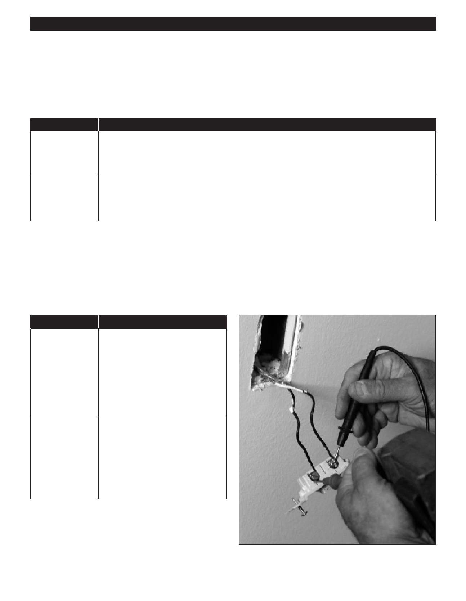

PA RT I C I PA N T R E S O U R C E G U I D E
Testing Single-pole Wall Switches (Continued)
How-to Steps
1. Turn off the power to the switch’s circuit at the main service panel.
2. Remove the switch plate and use a circuit tester or multimeter to make sure the power is off.
If You Use…
Then Follow These Steps…
A circuit tester
1. Touch one probe of the circuit tester to the grounded metal box or to the bare copper
grounding wire.
2. Touch the other probe to each screw terminal.
3. Make sure the tester does not light. If it does, there is still power entering the box.
A multimeter
1. Set the meter to AC volts.
2. Touch one probe of the meter to the grounded metal box or to the bare copper grounding wire.
3. Touch the other probe to each screw terminal.
4. Make sure the meter shows 0 to 2 volts. If the number is higher, there is still power entering the box.
3. Disconnect the old switch by removing the top and bottom screws holding the switch to the electrical box that’s mounted
in the wall.
4. Pull the switch toward you to expose the wires on the side and rear. If a wire is loose or broken, you’ve probably found
the problem.
5. Unscrew the terminal screws on the switch about 1/4 inch and remove the wires.
6. Use a continuity tester or multimeter to see if the switch itself is good or bad.
If You Use…
Then Follow These Steps…
A continuity
1. Attach the clip to the tester to one
tester
of the screw terminals.
2. Touch the tester probe to the other
screw terminal.
3. Turn the switch from ON to OFF.
The switch is good if the tester
lights when the switch is ON
but not OFF.
A multimeter
1. Set the meter to R X 1.
2. Place a probe on each screw
terminal.
3. Turn the switch from OFF to ON.
4. Check the meter. The switch is
good if the meter reading changes
from infinity to zero.
38